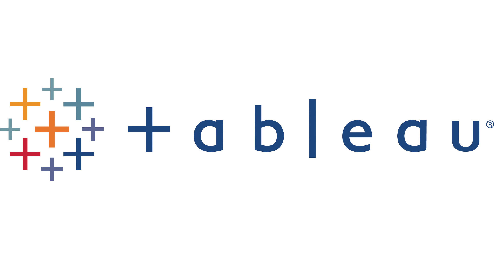

This project is about Nashville (the capital of Tennessee) Housing. The object of this project was to clean data and make it ready for visualization purposes.
By cleaning the data, I made the data more understandable and removed things that were unnecesarry like duplicates etc.. This helps to read and visualize the data more easier.

In this project, I looked into a hot topic which is Covid-19. The main goal of this project was to explore the data and to draw conclusions.
After exploring the data, I searched things that were interesting in the dataset like Covid Vaccinations versus Covid Deaths.
The interesting parts of the dataset were made ready to visualize. To learn more about Data Exploration and the dataset, click on "View Project".

Besides looking, cleaning and exploring the data, there is also one important thing to note. And that is: visualization of data. To make people understand the data and to tell a story with it, is the main purpose of Data Visualization and is something I love to do.
Here, you can find all of my Tableau Dashboards from all kind of datasets. I like to concentrate and present different datasets.